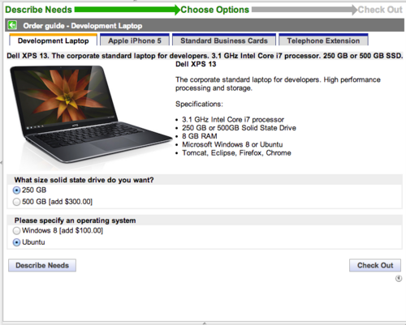

Service Catalog Order Guides
| |
Note: This article applies to Fuji. For more current information, see Request an Order Guide at http://docs.servicenow.com
The ServiceNow Wiki is no longer being updated. Please refer to http://docs.servicenow.com for the latest product documentation. |
Contents
1 Overview
Order guides allow customers to make a single service catalog request that generates several items.
For example, a New Employee Hire order guide could contain several items that new employees commonly need, such as business cards, computer, and cell phone. After selecting this order guide, the customer can then provide information about the new employee, including location and job title. The order guide then submits an order for catalog items like business cards, based on the details provided.
Order guides determine which catalog items to order by evaluating order guide rule conditions. Information the customer enters within the order guide can be passed as cascading variables to the ordered items, allowing common information to be reused across multiple items.
Administrators and catalog administrators can create order guides for the service catalog.
Order guides can be run automatically, generating a set of ordered items without needing to manually submit a service catalog request. For example, an onboarding workflow for a new employee can automatically run an order guide to order items for that employee. This feature is available starting with the Eureka release
2 Video Tutorial
This video demonstrates how to set up an order guide.
| Service Catalog: How to Set Up an Order Guide |
|---|
3 Ordering Process
By default, order guides present the customer with a three-step ordering process:
- Describe Needs: Enter information as prompted. Order guide rules evaluate this information to determine which catalog items to order.
- Choose Options: Select configuration options for the ordered items and provide any additional information needed.
- Check Out: Review and edit item information, then click Submit Order to place the request.
| |
Note: The Check Out step can be omitted from an order guide to provide a quicker two-step process. To omit this third step, select the Two step check box when creating the order guide. |
3.1 Example Order Guide: New Employee Hire
You could have a New Employee Hire order guide, providing services and items as part of an onboarding process. For this example, the ordering process could work as follows:
- Describe Needs: The order guide prompts the customer for information.
- Choose Options: The order guide uses the information entered and predefined rules to generate options.
- 
- The customer selects configuration options for the ordered items, and provides any additional information needed.
- Check Out: The customer reviews and edits item information, then clicks Submit Order to place the request.
{kind=link}
{kind=link}
{kind=link}
4 Creating Order Guides
- Navigate to Service Catalog > Catalog Definition > Order Guides.
- Click New.
- Fill in the fields, as appropriate (see table).
- Right-click the form header and click Save.
- In the Rule base related list, define the rules that determine which items are included in an order.
- [Optional] In the Variables related list, define any variables required.
{kind=link}
| Field | Description |
|---|---|
| Name | Order guide name that appears in the catalog. |
| Active | Check box to indicate whether the order guide is active or not. |
| Category | Category heading under which the order guide appears in the catalog. |
| Two step | Check box to enable two-step ordering instead of the default three-step ordering, omitting the final step. With two-step ordering, selecting Check out submits the request immediately, then displays the order confirmation screen. |
| Icon | A 16x16 pixel image to appear as an icon beside the order guide name in the catalog. If no image is uploaded, the default icon appears beside this order guide.
To use your own default icon, upload the image, overwriting the image stored in images/service_catalog/generic_small.gif. |
| Cascade variables | Check box to select whether the variables used should cascade, which passes their values to the ordered items. If this check box is cleared, variable information entered in the order guide is not passed on to ordered items. |
| Ordered Item Link | Link to more information about an ordered item. Select a predefined link item to appear on the ordered item screen. Customers can click the link to access more information. |
| Roles | Roles that users must have to access this order guide. |
| Short description | Summary of the order guide purpose. |
| Description | Description that appears on the first page of the order guide. Apply formatting with the HTML editor. |
| Picture | [Optional] Image of the item. |
| Order to cart | Check box allowing users to add order guides to their cart, then continue shopping rather than checking out immediately.
Note: This only works when the Two step check box is also set to true. |
5 Creating Rules
Order guide rules define conditions that must be met for a specific item to be included in an order. For example, a New Employee Hire order guide rule might state that if the new employee's job title is CTO or Director, and the department is IT, then add an executive desktop item to the order.
To create an order guide rule:
- Navigate to Service Catalog > Catalog Definition > Order Guides.
- Open an order guide.
- In the Rule base related list, click New.
- Fill in the fields, as appropriate (see table).
- Click Submit.
{kind=link}
| Field | Description |
|---|---|
| If this condition is true | Conditions that must be true for this rule to apply. Create conditions using the condition builder. Conditions can be evaluated against Keywords, Requested By, Requested For, or any variables defined for that order guide. |
| Include this item | Item to include in the order if all conditions defined in If this condition is true are matched. |
| At this position | Tab position to place this item within the Choose Options screen. Tab positions are numbered in order from left to right, with the lowest number appearing at the left of the screen. |
| Show quantity | Check box to show the quantity ordered within the order confirmation. |
| Ignore Mandatory Evaluation | Check box to allow customers to proceed without completing mandatory fields for the Describe Needs and Choose Options screens. A field's mandatory status is determined by the variable defining that field.
If mandatory fields are not enforced, then relevant information is not passed on to the ordered items. For example, in a New Employee Hire order guide, if the address is not provided then this information is not included in business cards ordered. Also see Avoiding Enforcement of Mandatory Fields Within Tabs. |
6 Creating Variables
Service catalog variables within order guides define the questions and potential answers presented to the customer while ordering. This information can then be used by order guide rules. Variables can also be cascaded, which passes the variable values along to individual ordered items.
To create or edit order guide variables, open an order guide, then select an entry from the Variables related list.
6.1 Cascading the Order Guide Variables
Cascading allows values entered for variables in the initial order form to be passed to the equivalent variables in the ordered catalog items. For example, a variable on the initial order form prompts the customer to enter a delivery location value. If you enable cascading, the value for this variable then populates delivery location fields on each of the ordered items.
To enable cascading, select the Cascade variables check box when creating the order guide. Then, create variables on the catalog items that match the names of the corresponding variables in the order guide. When a customer places an order, the variables on the ordered items inherit the values of the identically named variables in the order guide.
6.2 Using Variable Sets When Cascading Variables
To cascade variables requires the same variable on both the order guide and the ordered items. It can be useful to define each variable just once in a variable set, then assign the variable set to both the order guide and the individual catalog item. This approach avoids duplication and ensures the variable is the same in both locations.
To use a variable set with an order guide:
- Create the variable set.
- In the Variable Set form, create each variable.
- Add the variable set to the order guide and to each catalog item involved.
| |
Note: The individual variables in a variable set do not appear in the Order guide or Catalog Item forms. To view the variables in a variable set, open the variable set record. |
6.3 Hiding Cascaded Variables on Ordered Items
When cascading variables, you may want to hide the duplicated variables on the Choose Options screens, making these screens simpler. To achieve this, run an onLoad catalog client script to hide the variable on all screens after the initial Describe Needs screen.
For example:
function onLoad() {
var item = $("current_item");
var guide = $("sysparm_guide");
if (item != null && guide != null && item.value == guide.value)
return;
g_form.setDisplay('YOUR_VARIABLE_NAME', false);
}
7 Running Order Guides Automatically
You can run an order guide automatically from within a workflow or a server script, passing parameters to that order guide to define variable values.
This allows you to automatically generate a set of ordered items as part of a wider process, without needing to manually submit a service catalog request and reenter existing information.
For example, you can run an order guide to fulfill HR onboarding requests, passing parameters such as the new employee's position and department. The order guide then generates a set of requested items such as laptop and email account, based on those parameters.
Order guides can be run automatically starting with the Eureka release.
8 Avoiding Enforcement of Mandatory Fields Within Tabs
By default, mandatory fields must be filled in before switching tabs in the Choose Options section of order guides. This is available starting with the Eureka release.
{kind=link}
In this example, if the customer attempts to select another tab without filling in the Street Address field, a warning prompt appears. The customer cannot switch tabs without entering this information.
To avoid this enforcement in all order guides:
- Navigate to Service Catalog > Catalog Policy > Properties.
- Locate the property Validate mandatory fields when switching tabs in 'Choose Options' section of Order Guides (glide.sc.guide.tab.validate).
- Clear the Yes check box.
If you make this change, mandatory fields are still mandatory, but the customer can switch between tabs before filling in the mandatory fields. Enforcement is then checked when the customer chooses to proceed to the next step.
To avoid enforcement of mandatory fields altogether, use the Ignore Mandatory Evaluation check box within the relevant order guide rule.
9 Script Field in Order Guide
The script field in an order guide can be used to add or remove catalog items to or from the order guide. It can be added to the order guide form by configuring the form layout.
- To add a catalog item that is not added to the order guide via a rule base, write the following code in the script field:
guide.add(“<sys_id_of_cat_item>")
- To remove a catalog item that is added to the order guide via a rule base, write the following code in the script field:
guide.remove(“<sys_id_of_cat_item>")